Ship Supply Services
Explore the complete range of marine supply services, from fresh provisions to technical spare parts, available at Port Rijeka, Split, and all Croatian ports.
The Adriatic Maritime Hub
Croatia is a premier Southeast European maritime nation on the Adriatic Sea. Famous for its stunning coastline and medieval architecture, it is also a vital commercial gateway for Europe and the Mediterranean. Ship Chandler Croatia leverages this strategic location from our Rijeka base, providing rapid, seamless vessel supply and marine procurement across all major Croatian ports.
Croatian Port Network
We provide rapid vessel supply and offshore delivery to all major commercial and passenger ports along the Croatian coast. While we specialize in these key locations, our network allows us to arrange supply chains extending beyond these ports to meet your vessel's exact itinerary.
Rijeka
The largest seaport in Croatia, serving as a major gateway for Central Europe.
Ploce
A key commercial port handling bulk cargo and linked to the Bosnian hinterland.
Split
A major passenger and cargo port, central to the Dalmatian coast and islands.
Sibenik
A historic port located in a deep bay, known for its shipyard and trade.
Zadar
A busy passenger port and a growing hub for yacht charters and tourism.
Dubrovnik
A world-famous cruise destination, handling massive passenger vessels.
Pula
A major port on the Istrian peninsula, serving shipbuilding and tourism.
Rovinj
A picturesque port town, heavily frequented by yachts and tourists.
Bakar
A deep-water port near Rijeka, home to significant industrial terminals.
Omisalj
Location of a major oil terminal on the island of Krk.
Senj
A historic coastal town and port at the foot of the Velebit mountains.
Korcula
A prominent island port known for its maritime traditions and tourism.
Vukovar
A major inland river port on the Danube, essential for river cargo.
Comprehensive Marine Supply
Filter through our comprehensive marine supply services to support your vessel's operations at any Croatian port.
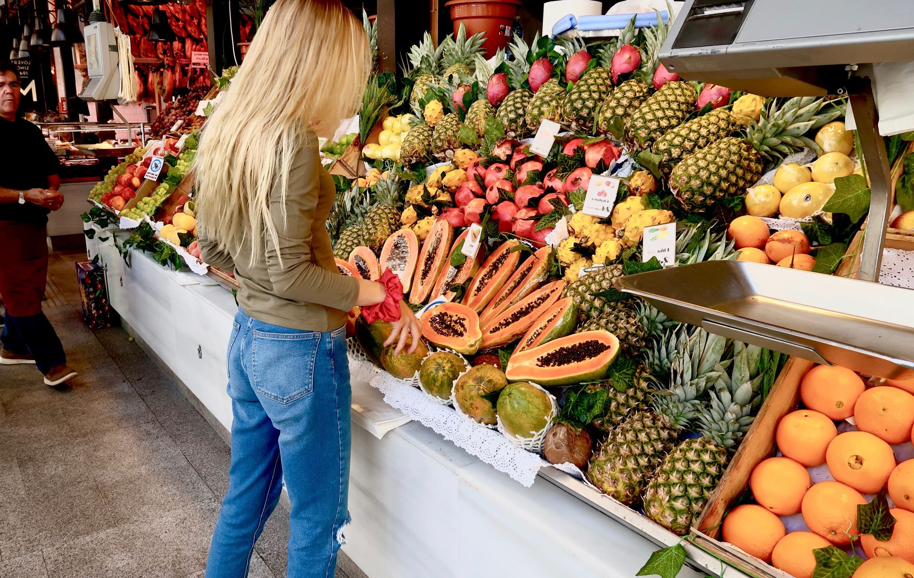
Provisions Supply
Ship Chandler Croatia Provisions supply fresh, chilled, frozen, and dry provisions to support vessel crews and galley requirements. Provision orders can be prepared according to crew nationality, vessel requirements, requested brands, and pack sizes. High-quality food provision supply ensures the crew remains well-fed and operational. Sourcing reliable ship provisions requires careful attention to cold-chain logistics and shelf-life management. We arrange swift delivery of these provisions to vessels at Rijeka, Ploce, Split, Sibenik, Zadar, Dubrovnik, Pula, Rovinj, Bakar, Omisalj, Senj, Korcula, and Vukovar. We also offer customized menu planning to accommodate specific dietary restrictions and cultural preferences for multinational crews.
- Fresh fruits and vegetables
- Meat and poultry
- Fresh and frozen seafood
- Dairy products & Eggs
- Bakery products
- Rice, pasta, flour and cereals
- Canned & Frozen food
- Beverages and drinking water
- Coffee and tea
- Condiments and spices
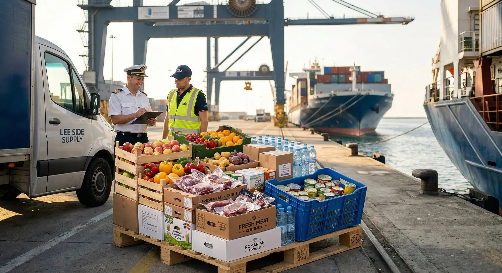
Bonded Stores
Ship Chandler Croatia supplies bonded and duty-free provisions subject to applicable customs and port regulations. We coordinate necessary clearances and delivery permits directly to the vessel. A reliable bond store supply chain ensures crew welfare items and duty-free goods are delivered efficiently and compliantly. Navigating local customs procedures requires experienced coordination. Whether your vessel is berthed at Rijeka, Ploce, Split, Sibenik, Zadar, Dubrovnik, Pula, Rovinj, Bakar, Omisalj, Senj, Korcula, or Vukovar, we ensure full compliance and timely delivery. Our team stays updated on the latest customs regulations to prevent any delays in your vessel's schedule.
- Tobacco products
- Confectionery
- Soft drinks
- Personal care products
- Crew welfare items
- Other bonded products upon request
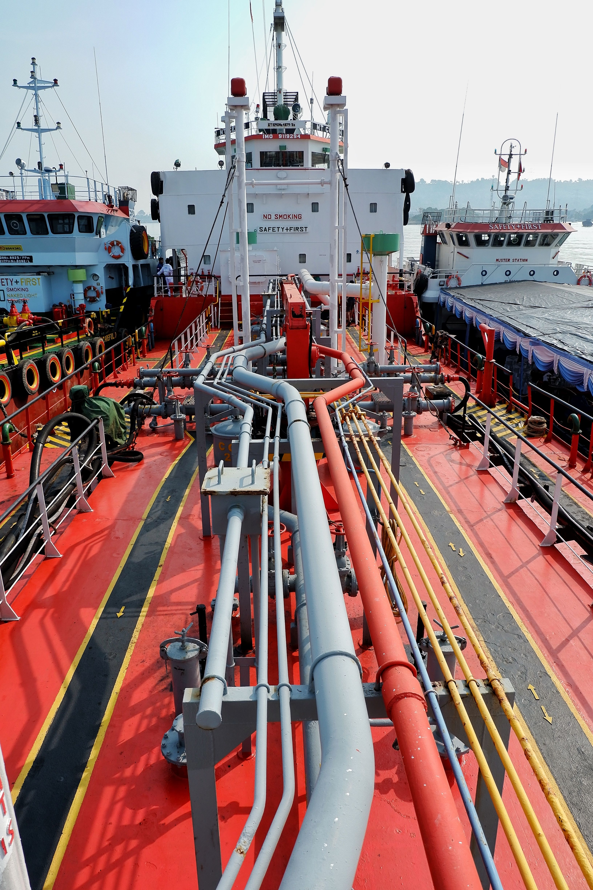
Deck Stores
Ship Chandler Croatia deck department can source and supply a wide range of deck consumables and equipment. Products can be quoted according to IMPA references, dimensions, SWL, material specifications, required certificates, or preferred manufacturers. Ensuring the availability of heavy-duty mooring ropes, wire ropes, and lifting accessories is critical for maritime safety. We coordinate delivery to vessels at Rijeka, Ploce, Split, Sibenik, Zadar, Dubrovnik, Pula, Rovinj, Bakar, Omisalj, Senj, Korcula, and Vukovar to keep your operations running smoothly. Our supply includes high-quality mooring lines and cargo securing materials that meet international safety standards.
- Mooring ropes and hawsers
- Wire ropes
- Shackles & Turnbuckles
- Chains
- Lifting accessories
- Cargo securing materials
- Marine paints and coatings
- Tarpaulins
- Cleaning equipment
- Deck maintenance tools
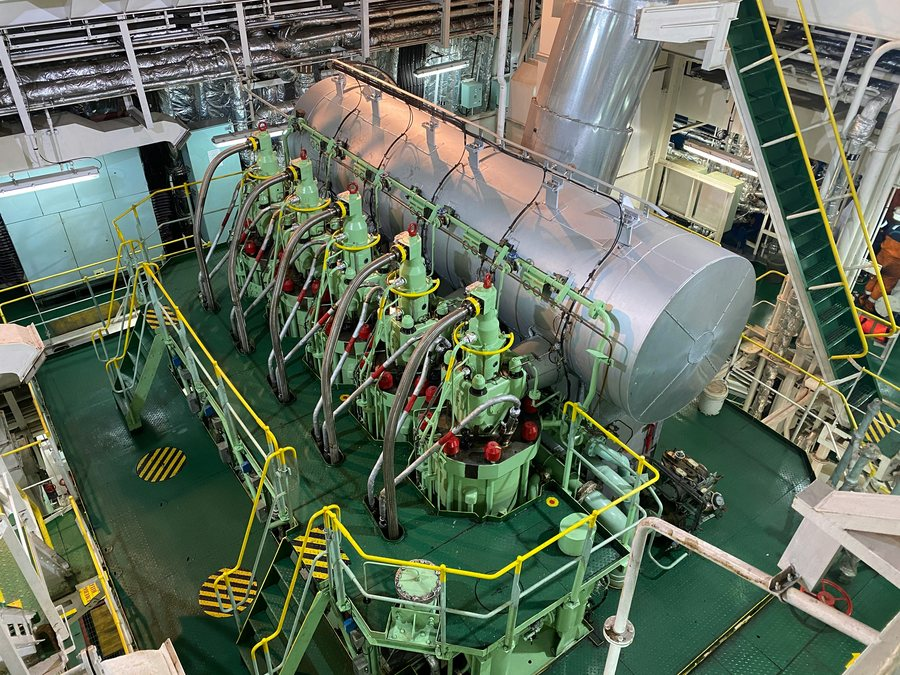
Engine Stores
Ship Chandler Croatia supports engine departments with routine consumables, tools, and technical materials for main engines, generators, and auxiliary machinery. For technical requirements, customers are encouraged to provide maker, model, serial number, part number, drawings, or photographs to ensure accurate sourcing. Quality engine stores and spare parts minimize downtime. We arrange delivery for vessels at anchor or in transit through Rijeka, Ploce, Split, Sibenik, Zadar, Dubrovnik, Pula, Rovinj, Bakar, Omisalj, Senj, Korcula, and Vukovar. We also provide technical support to help identify the correct parts for your specific engine models, reducing the risk of costly errors.
- Filters & Gaskets
- Bearings
- Valves & Pumps
- Mechanical seals
- Lubricants and greases
- Hydraulic hoses and fittings
- Measuring instruments
- Hand and power tools
- Workshop consumables
- Selected machinery spare parts
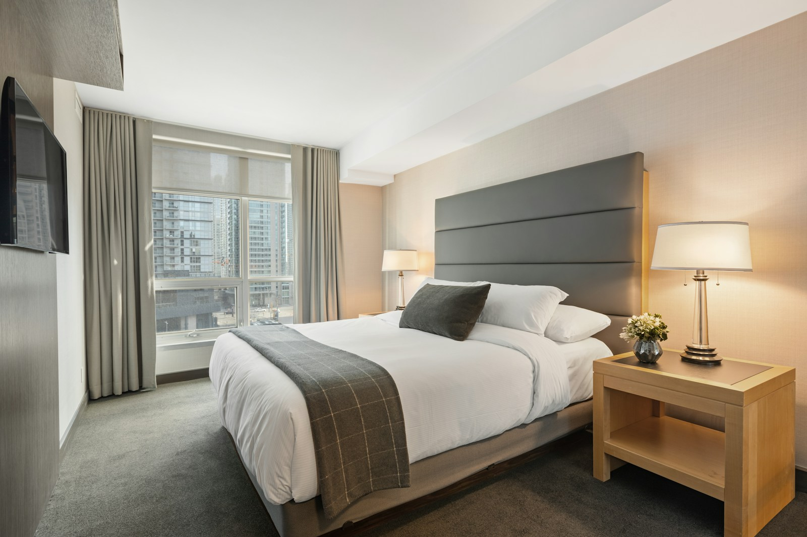
Cabin & Galley Stores
Ship Chandler Croatia provides everyday consumables and equipment required by the accommodation and catering departments. Cabin and galley stores are sourced to ensure crew comfort and hygiene standards are maintained. High-quality accommodation supplies, including bed linen, towels, and mattresses, contribute significantly to crew morale. We coordinate deliveries across Rijeka, Ploce, Split, Sibenik, Zadar, Dubrovnik, Pula, Rovinj, Bakar, Omisalj, Senj, Korcula, and Vukovar to keep your crew comfortable throughout the voyage. We offer a wide range of cleaning and laundry products that are specifically designed for use in a marine environment.
- Bed linen & Towels
- Blankets & Pillows
- Tableware & Cookware
- Kitchen utensils
- Galley equipment
- Cleaning products
- Laundry products
- Toiletries
- Garbage bags
- Crew welfare products
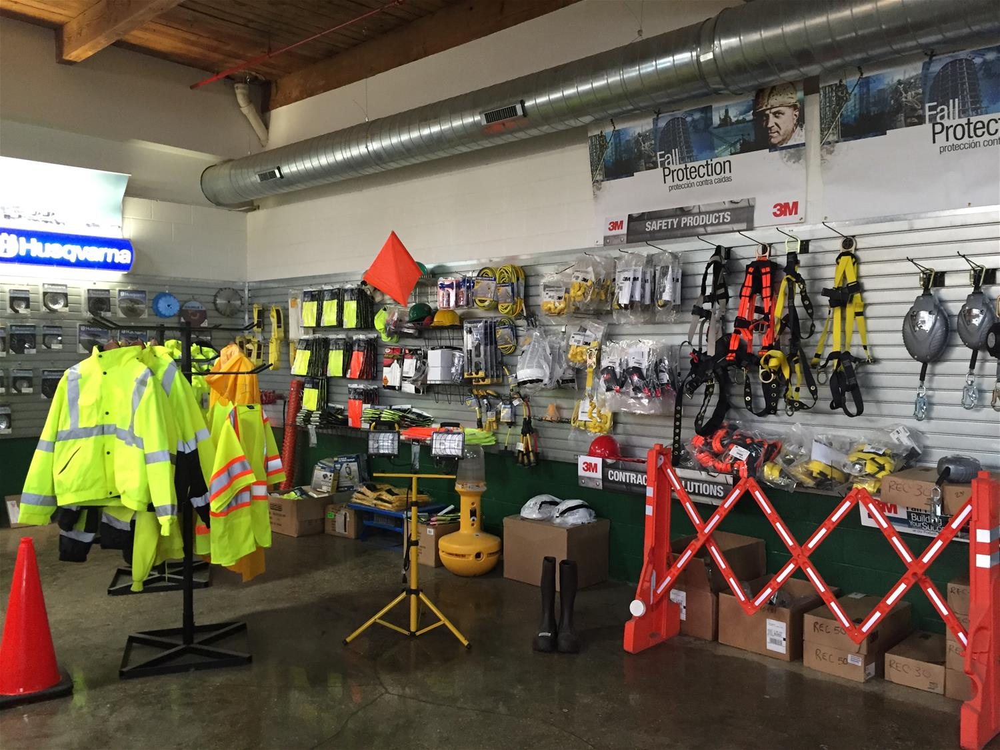
Safety & PPE
Ship Chandler Croatia supplies safety and personal protective equipment according to vessel requirements and international standards. Where certification is required, the applicable standard or certificate requirement should be specified in the RFQ. A comprehensive range of safety equipment ensures compliance with maritime safety regulations. We provide timely delivery to Rijeka, Ploce, Split, Sibenik, Zadar, Dubrovnik, Pula, Rovinj, Bakar, Omisalj, Senj, Korcula, and Vukovar to keep your crew safe and compliant. We only source from reputable manufacturers to ensure all safety gear meets the stringent requirements of the maritime industry.
- Safety helmets & shoes
- Coveralls
- Protective gloves
- Safety goggles & face shields
- Respiratory protection
- Safety harnesses
- Life-saving equipment
- Fire-fighting related products
- Safety signs and tapes
- First-aid products
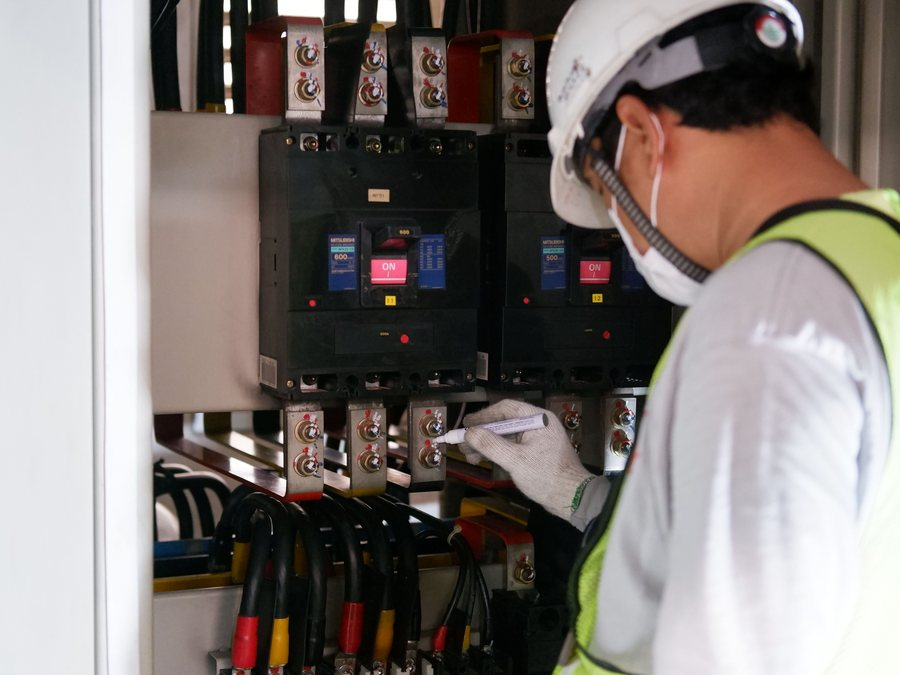
Electrical Stores
Ship Chandler Croatia sources electrical products and consumables for deck, engine-room, and accommodation requirements. High-quality electrical stores, including marine lamps, cables, and circuit breakers, ensure the vessel's electrical systems remain operational and safe. Essential consumables such as fuses, relays, and contactors support routine maintenance. We arrange rapid delivery for vessels at Rijeka, Ploce, Split, Sibenik, Zadar, Dubrovnik, Pula, Rovinj, Bakar, Omisalj, Senj, Korcula, and Vukovar. Our team can assist in sourcing specialized marine electrical components that are compliant with international maritime standards.
- Marine lamps & LED lighting
- Cables and wires
- Plugs and sockets
- Circuit breakers
- Fuses & Relays
- Contactors
- Switches
- Batteries
- Electrical tools
- Cable accessories
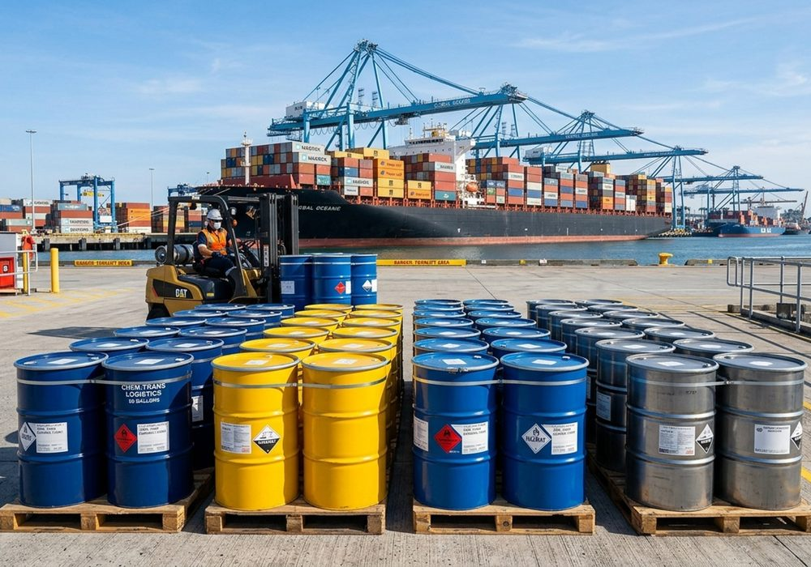
Marine Chemicals
Ship Chandler Croatia supplies marine and industrial chemicals for vessel maintenance, water treatment, and operational requirements. Product specifications and Safety Data Sheets (SDS) can be provided where applicable. We source quality chemicals, including degreasers and tank cleaning products, to maintain vessel hygiene. We ensure safe and compliant delivery to vessels at Rijeka, Ploce, Split, Sibenik, Zadar, Dubrovnik, Pula, Rovinj, Bakar, Omisalj, Senj, Korcula, and Vukovar. All our chemicals are handled and transported in accordance with international safety regulations to ensure the safety of your crew and the environment.
- Cleaning chemicals
- Degreasers
- Rust removers
- Descaling chemicals
- Tank cleaning products
- Water-treatment chemicals
- Maintenance chemicals
- Engine-room cleaning products
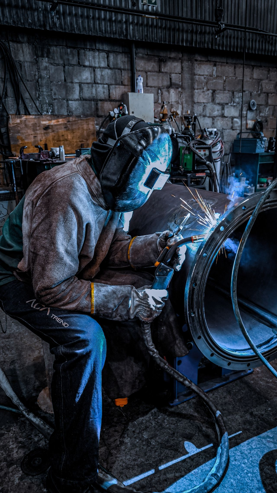
Welding Equipment
Ship Chandler Croatia can source a comprehensive range of welding and cutting materials for onboard maintenance and repair operations. Quality welding equipment, including electrodes, wires, and cutting discs, supports the vessel's crew in performing essential repairs safely and effectively. Access to industrial and marine gases is subject to local regulations. We arrange delivery to Rijeka, Ploce, Split, Sibenik, Zadar, Dubrovnik, Pula, Rovinj, Bakar, Omisalj, Senj, Korcula, and Vukovar. Our supply includes a variety of welding accessories and personal protective equipment to ensure safe and efficient operations.
- Welding electrodes
- Welding wire
- Cutting discs
- Grinding discs
- Welding accessories
- Welding PPE
- Regulators & Hoses
- Industrial and marine gases (subject to regulations)
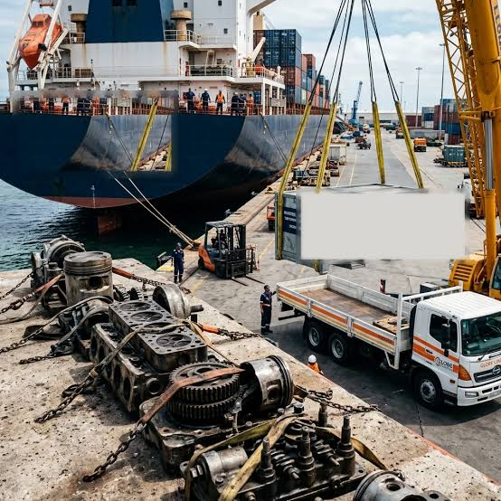
Spare Parts
Ship Chandler Croatia assists with standard and non-standard marine spare parts and technical equipment. For faster identification, please provide maker, equipment model, serial number, OEM part number, IMPA reference, dimensions, drawings, or clear photographs. Sourcing quality spare parts minimizes downtime and ensures operational reliability. We coordinate rapid delivery to vessels at Rijeka, Ploce, Split, Sibenik, Zadar, Dubrovnik, Pula, Rovinj, Bakar, Omisalj, Senj, Korcula, and Vukovar. Our global network allows us to source parts from major manufacturers, ensuring you get the right part quickly.
- Main and auxiliary engine parts
- Pump & Compressor components
- Electric motors
- Refrigeration components
- Navigation & Communication equipment
- Marine electronics
- Hydraulic components
- OEM and alternative spare parts
Nautical Charts
Ship Chandler Croatia assists with nautical charts, marine publications, and operational reference materials required for the voyage. Access to up-to-date charts and publications is essential for safe navigation and compliance with international maritime regulations. We provide official logbooks and record books to ensure mandatory documentation is maintained. Our delivery network covers Rijeka, Ploce, Split, Sibenik, Zadar, Dubrovnik, Pula, Rovinj, Bakar, Omisalj, Senj, Korcula, and Vukovar. We ensure all charts and publications are the latest editions, keeping your vessel compliant with the latest navigational standards.
- Admiralty nautical charts
- IMO, SOLAS, MARPOL & STCW publications
- Official vessel logbooks and record books
- Marine navigational notices and flag sets
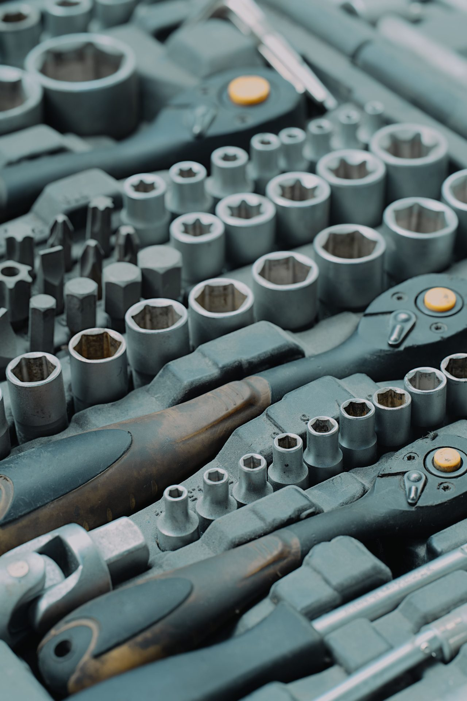
Tools & Hardware
Ship Chandler Croatia supply range includes hand tools, power tools, cutting tools, measuring equipment, fasteners, and general marine hardware for routine maintenance and emergency repairs. Quality tools and hardware are readily available to support the crew in maintaining operational efficiency and safety. We arrange fast delivery to Rijeka, Ploce, Split, Sibenik, Zadar, Dubrovnik, Pula, Rovinj, Bakar, Omisalj, Senj, Korcula, and Vukovar to keep your workshop ready. Our inventory includes a wide selection of professional-grade tools from trusted brands, ensuring durability and reliability.
- Hand tools
- Power tools
- Cutting tools
- Measuring equipment
- Fasteners
- General marine hardware
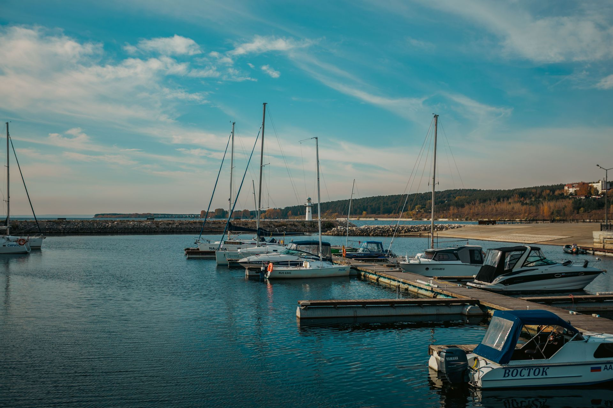
Urgent Supply
Vessel schedules can change quickly. For urgent requirements, Ship Chandler Croatia coordinates procurement and delivery according to the vessel ETA, berth availability, port access, and local operating conditions. Urgent enquiries should clearly indicate the required delivery deadline so availability and logistics can be assessed immediately to prevent vessel delays. We dispatch rapidly to Rijeka, Ploce, Split, Sibenik, Zadar, Dubrovnik, Pula, Rovinj, Bakar, Omisalj, Senj, Korcula, and Vukovar. Our dedicated emergency response team is available 24/7 to handle last-minute requests and ensure your vessel is never delayed due to missing supplies.
- Emergency ETA and short-call coordination
- Rapid sourcing within vessel port stay
- Berth and outer anchorage launch dispatch
- Direct boarding agent synchronization